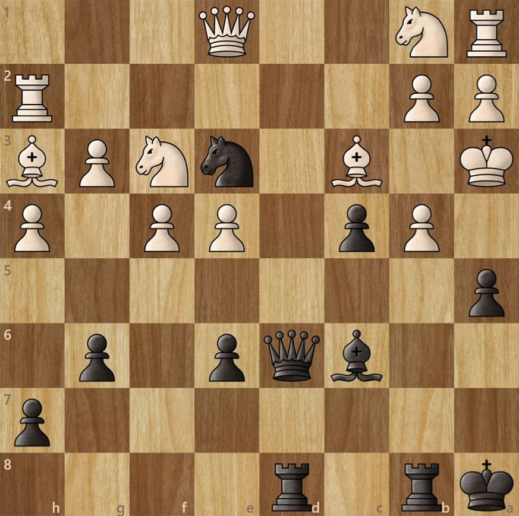

Chess Puzzle
An awesome position with a crazy solution. I seriously can't get over this after solving it, it is by far one of the coolest positions I've ever seen. Black to play and mate in 3.

I don't know what game this is from, but with how ridiculous and pretty the line is I wouldn't be suprised by Morphy or Fischer.
Courtesy of sushiroll.